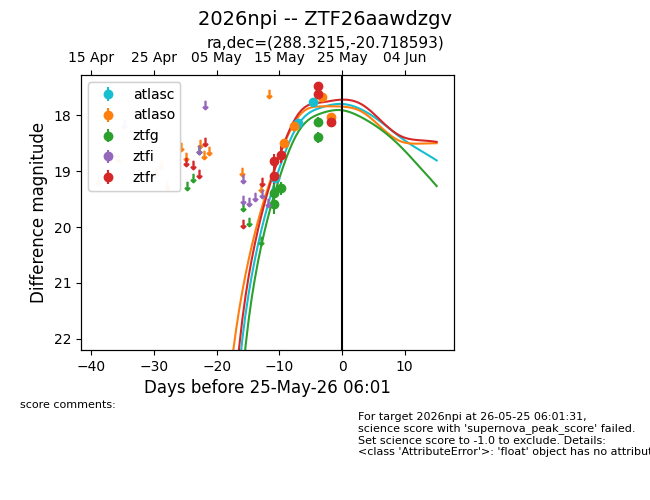
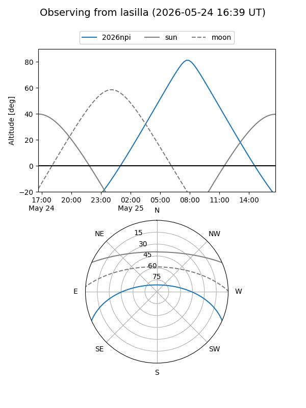
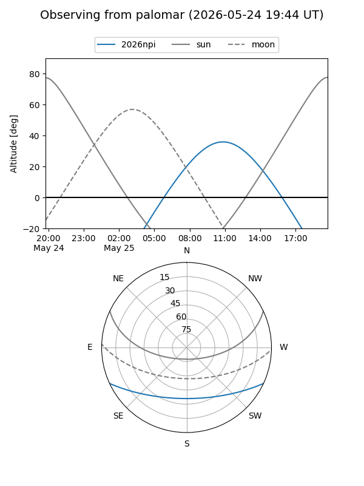
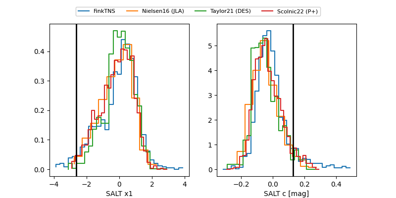

2026npi
Target 2026npi at 2026-05-25 06:02
Aliases and brokers:
lsst-FINK: link
lsst-Lasair: link
lsst-ALeRCE: link
ztf-FINK: link
ztf-Lasair: link
ztf-ALeRCE: link
TNS: link
YSE: link
alt names
ZTF26aawdzgv (ztf,fink_ztf)
2026npi (tns,yse)
Coordinates:
equatorial (ra, dec) = 288.3215,-20.71859
equatorial (HMS+DMS) = 19:13:17.17,-20:43:06.94
galactic (l, b) = (16.5189,-13.91921)
Flags:
TNS confirmed: nan
Photometry:
last atlasc=17.75, atlaso=18.03, ztfg=18.39, ztfr=18.13
3 atlasc, 4 atlaso, 5 ztfg, 6 ztfr detections
Lightcurve

Visibility


Additional plots
